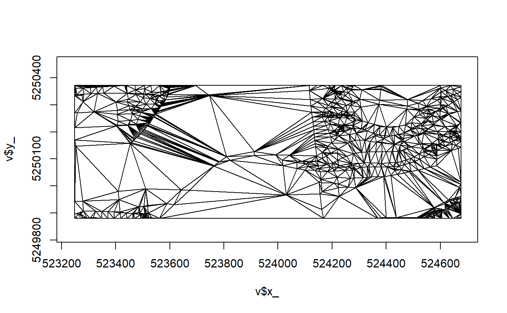

DEL0.RdThis structural-form Delaunay-based triangulation model is analogous to the TRI() model in the silicate package and formally extends the class of that model. A primitives-based shape-constrained triangulation. The Delaunay model is the mostly Delaunay scheme used by the provable-quality meshers.
DEL0(x, ..., max_area = NULL) # S3 method for DEL DEL0(x, ..., max_area = NULL) # S3 method for default DEL0(x, ..., max_area = NULL) # S3 method for SC DEL0(x, ..., max_area = NULL) # S3 method for SC0 DEL0(x, ..., max_area = NULL) # S3 method for TRI DEL0(x, ..., max_area = NULL) # S3 method for TRI0 DEL0(x, ..., max_area = NULL) # S3 method for ARC DEL0(x, ..., max_area = NULL) # S3 method for PATH DEL0(x, ..., max_area = NULL) # S3 method for PATH0 DEL0(x, ..., max_area = NULL)
| x | object of class PATH0 or understood by |
|---|---|
| ... | ignored |
| max_area | the maximum area of a triangle |
DEL0 class
This is a more compact form of the relational-form DEL() model.
Note that for explicitly linear features, these still use a post-meshing identification for which triangles belong in which feature. This can't make sense for many line layers, but we leave it for now.
For point features, the mesher unproblematically creates a triangulation in
the convex hull of the points, any attributes names z_, m_, or t_ are
automatically interpolated and include in the output. See the help for
RTriangle::triangulate() for how this works via the $PA element.
## ---- intepolate via triangulation, sample points from volcano rgl::clear3d() n <- 150 max_area <- .005 ## we working in x 0,1 y 0,1 library(anglr) library(dplyr)#> Warning: package 'dplyr' was built under R version 3.6.3#> #>#> #> #>#> #> #>#> #> #>d <- data.frame(x = runif(n), y = runif(n), multipoint_id = 1) %>% dplyr::mutate( z = raster::extract(raster::raster(volcano), cbind(x, y)), multipoint_id = 1 ) # \donttest{ mesh <- DEL0( sfheaders::sf_multipoint(d, x = "x", y = "y", z = "z", multipoint_id = "multipoint_id"), max_area = max_area) plot3d(mesh , color = "darkgrey", specular = "darkgrey") #sample(grey.colors(5))) # }